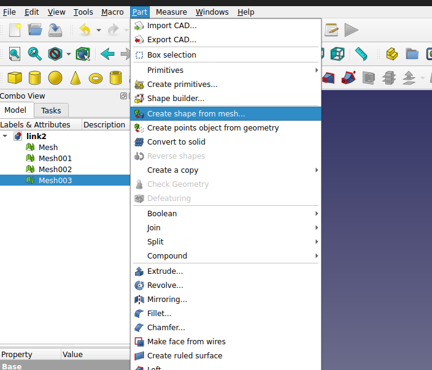

Creating Robot Description
Note
If you are unfamiliar with FreeCAD, check its introduction first.
Also check out Moving Parts (to different reference Systems).
Create Description files
Follow the RTW manual: https://rtw.stoglrobotics.de/master/use-cases/ros_packages/setup_robot_description_package.html
Preparing robot meshes - workflow
This workflow describes how to take the .step or .stp files of the robot in question and produce visual and collision meshes for robot use.
We do this for the following reasons:
To split the robot model into parts, with one mesh per part, so they can be included in the
URDFfiles;To reduce visual mesh size and adjust origins to match joint origins;
To generate simplified collision meshes (less vertices per part) for faster path planning.
Warning
To achieve this, we use the following workflow and tools
FreeCAD - for .step file manipulation (delete unnecessary parts, group parts, measure joint origin)
MeshLab - for .dae mesh manipulation (simplify mesh, create convex hull for collision)
Blender - for .dae origin manipulation (move joint origin)
Make sure you have the .step or .stp files and open them in FreeCAD
The robot model should be split into parts already. Below is an example of such a file opened in FreeCAD.
Note
.stp files can be really messy. They can have many parts that are unnecessary for prurposes of visualization, and the parts may not be grouped by sections we intend to use.
Make sure to remove unnecessary parts and group them to have one part per link.


Exporting .dae files from FreeCAD
Sort the elements according to colors. This means that the parts of the same color, may be in the same group (object/assembly).
Mark the objects you want to export to COLLADA mesh format.
Choose
File --> Exportand choose.daeas file format.Error
COLLADA export options need to be checked, especially scaling. Make sure you export in
munits, as this is the unit ROS 2 expects.
Moving the mesh origin
It is likely that the robot parts will have the same origin, in the base of the robot.
Before exporting each part as .dae , we ideally want the origin of each mesh to align with the origin of the joint. This is done so that no additional origin transformations have to be applied in the URDF, rather the mesh files can be imported directly.
Note
Sometimes, measuring the parts and adjusting origins in the URDF can be easier than shifting origins, but produces a more cluttered URDF.
This part does not have a workflow that will work in all cases, as it depends on the state of the received .stp files.
Tip
For moving joint origins in .dae format, Blender is the software of choice. Make sure you have simplified the meshes and determined joint origins!
Blender resources
You can move object, object origin only, you can fix global or local x, y, or z axis while doing so! Experiment some, these are really useful when inputting exact values for joint origins.
You might need to set up blender for working with exact
mmvalues, so that the scale of the objects is preserved. Check out this videoHere is a useful video on object origin manipulation
Simplify visual meshes
Now we open MeshLab to simplify the visual mesh. In the resulting mesh, we are aiming for several thousand vertices, depending on the complexity of the part. This is usually enough for all of the visual information to be preserved without introducing unwanted visual artifacts
Manuel for the process of Simplifying Visual Meshes
Open the file in MeshLab and reduce its size
Filters --> Remeshing, Simplification and Reconstruction --> Simplification: Quadratic Edge Collapse DecimationApply and export as
.dae
Generate collision meshes
Warning
It is also possible for you to export .stl directly from FreeCAD. This will not be transformed! Therefore, always first export .dae and then convert to .stl as needed.
Note
There is also a trick on how to export transformed. Use the Part_Fuse tool from Part workbench to get all the objects into one.
For collision meshes, a low vertex count is crucial for the speed of planning algorithms. To get a mesh that is simple but encapsulates the whole part, we do the following:
Open the visual mesh in MeshLab and generate a Convex Hull
Filters --> Remeshing, Simplification and Reconstruction --> Convex HullExport the collision mesh as
.stlIf possible, without significant loss of details, reduce the mesh size further.
Filters --> Remeshing, Simplification and Reconstruction --> Simplification: Quadratic Edge Collapse DecimationApply and export as
.stl
All done! You now have both visual and collision meshes .stl for your robot.
Coloring the visual meshes
After exporting from FreeCAD and decimating the mesh in Meshlab, color information is lost along the way. We can color the mesh manually using the following workflow:
Import
.daemesh to FreeCADOpen
MESH WORKBENCHNote
Sometimes,
.daemesh is already split to basic components. In the cases of more complex shapes, we can further separate mesh by components for finer control over colors of those components.
Select desired components and merge them by color. Here you can also delete some decimation artifacts if you see they don’t impact the visual.

Convert the grouped mesh components to parts using
PART WORKBENCHSet the part colors


All done! You can now export your parts as
.daeonce more and use them in your package.